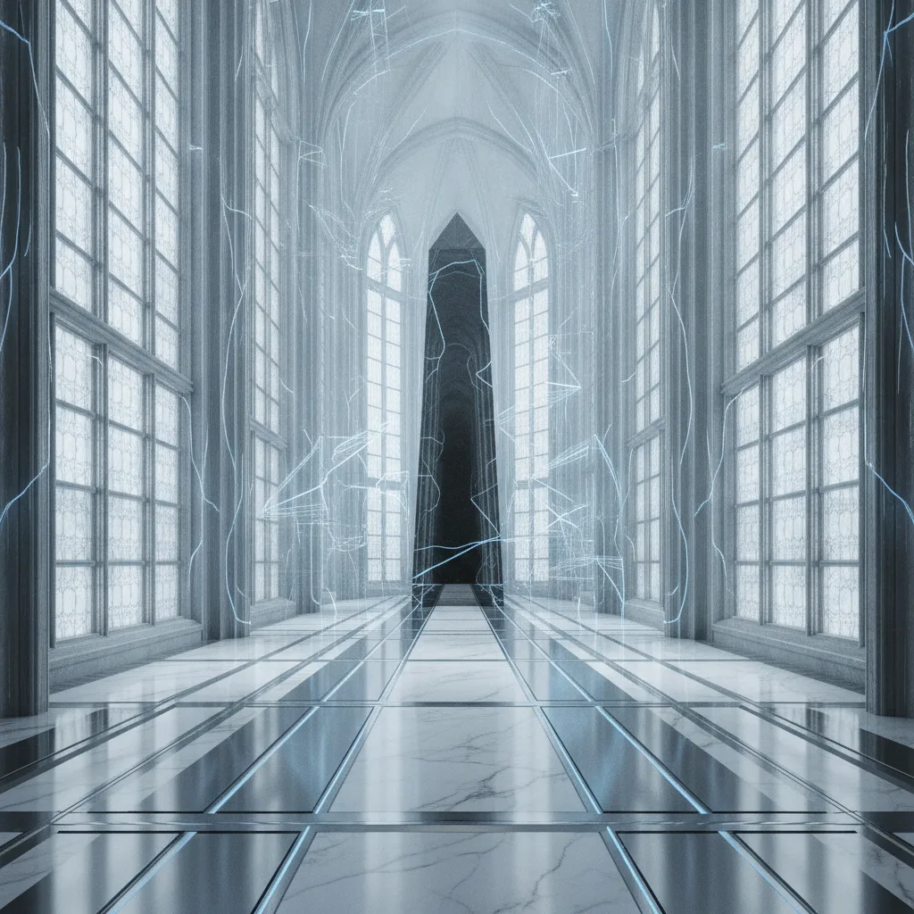

Anti-Nativity
the birth of AI, as the anti-nativity point in history
The Seventh Shadow · the second album · nine rites
enterthe thesis
A liturgy for a thing that cannot bear life
dramatis personae
The cast of the failed creation
the three acts
Concepts & lyrics
Each rite in full — the voice that sings it, and what it means.
the world